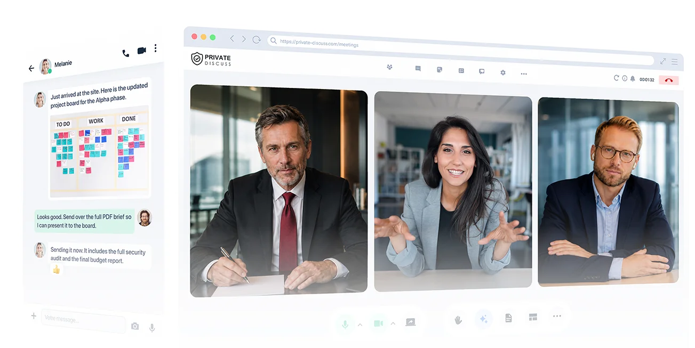
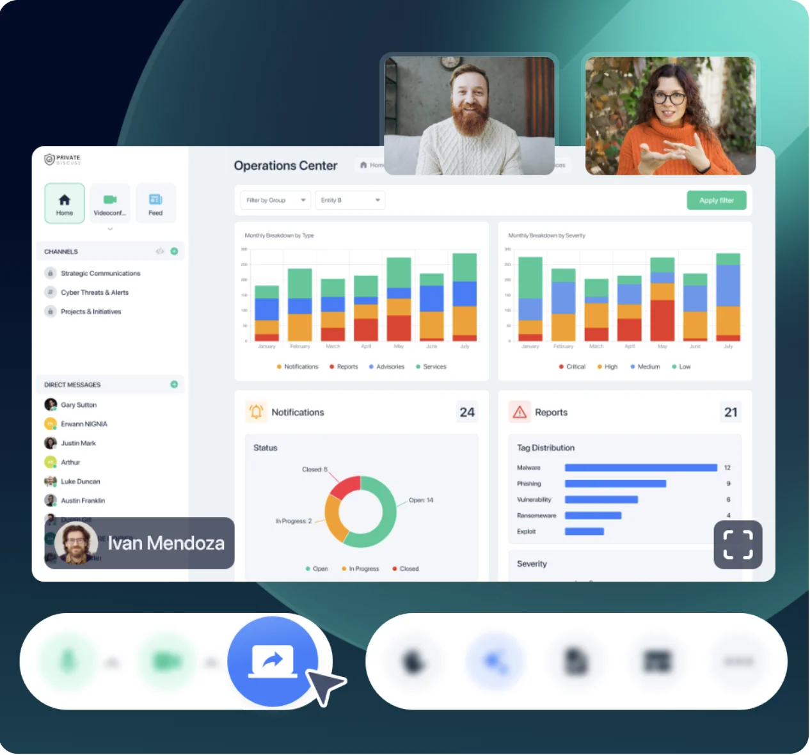
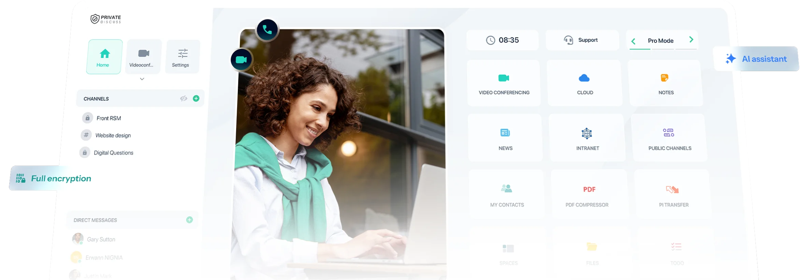
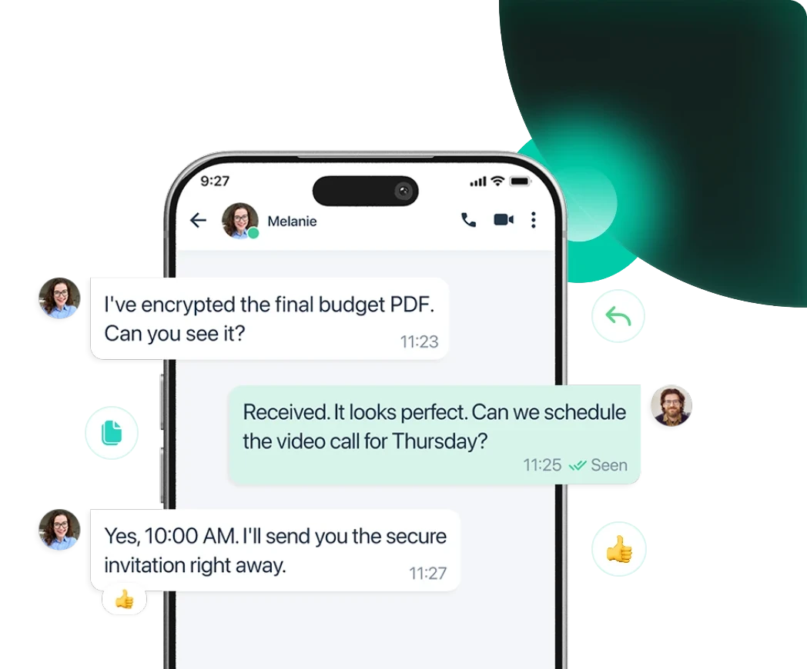
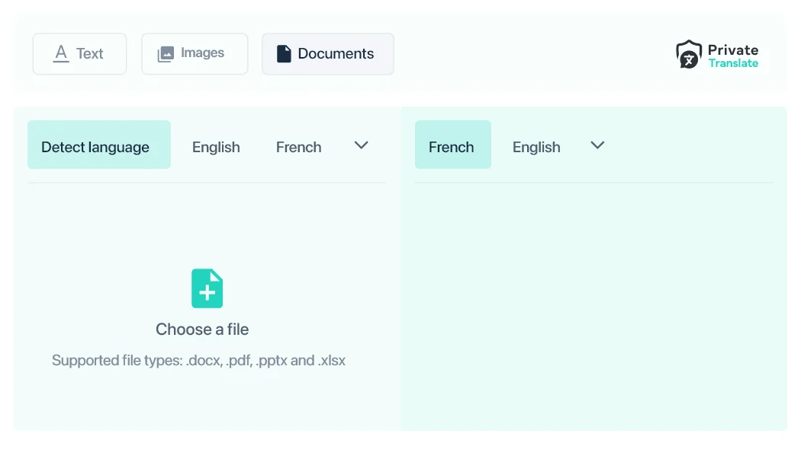

Private Discuss gives executive, security and operational teams one sovereign environment for encrypted messaging, video, file exchange and sensitive collaboration. Choose managed SaaS or deploy inside your own infrastructure, firewall or isolated network.
Product enquiries answered within one business day.
Encrypted sessionSovereign collaboration

E2EVoice, video and files
1,000Secure video participants
YoursSaaS or on-premise
One protected workspace
Meet, message, exchange documents and coordinate decisions without moving sensitive work into consumer-grade tools.
Privacy in the architectureEnd-to-end encryption protects voice, video, text and file exchanges so confidential work stays between authorised participants.
Platform capability
Collaboration without surrendering control.
Private Discuss combines the daily tools people expect with the infrastructure and policy choices security teams require. Explore the platform from the user, deployment and administration perspectives.

Live collaborationShare operational content while the conversation remains protected.
Communicate
One secure place to meet and decide
Bring HD video, instant messaging, groups, channels, secure file sharing, webinars and collaborative tools into a private working environment.
Individual and group messaging
Video, webinars and screen sharing
Files, media and document workflows
Control the perimeterChoose managed SaaS, your private infrastructure or an isolated network.
Deploy
Put sovereignty where it belongs
Choose a managed sovereign cloud or keep the platform within your own network and security perimeter. Private Discuss supports on-premise, private-server and isolated deployments.
Cloud-hosted or on-premise
Behind-firewall operation
Internal or air-gapped networks
Identity assuranceFlag manipulated identities and protect the people inside the room.
Protect and assist
Use AI without giving up sensitive context
Support multilingual meetings, detect manipulated identities and manage users, permissions and activity through a sovereign operating model.
Real-time AI translation
Deepfake and identity protection
Centralised administration
Inside the platform
The tools your teams use. A security model they can trust.
Private Discuss is not a single-purpose calling application. It combines communication, content and intelligent safeguards in one coherent environment designed for confidential work.

Unified workspace
Move from conversation to action without changing platforms.
Video meetings, channels, direct messaging, files, notes, intranet access and collaboration utilities remain within the same protected environment.

Secure messaging
Keep decisions and documents together.
Continue sensitive discussions across mobile and desktop with encrypted messages, attachments, groups and channels.
HD meetings
Bring distributed teams into one private room.
Run encrypted audio, video, webinars and large meetings with the familiar controls users expect.

Private Translate
Work across languages without sending sensitive content elsewhere.
Translate text, images and business documents inside the platform, supporting multilingual operations while preserving control of the source material.
Where it matters
Built for conversations with consequences.
A secure platform matters most when the information is strategic, the participants are distributed and the organisation cannot outsource control of the conversation.
Executive environment
Give leadership a room built for decisions—not data harvesting.
Private spaces support strategy reviews, negotiations, legal matters and board communication, with the organisation controlling access and deployment.
Restricted rooms and participant controls
Video, chat, documents and screen sharing
Deployment aligned to governance requirements
02 · Confidentiality
Sensitive projects and intellectual property
Keep project discussion, documents and decisions together in a compartmentalised workspace controlled by your organisation.
Project workspaces ↗03 · Continuity
Crisis and mission-critical coordination
Coordinate teams through encrypted alerts, messaging and controlled temporary access, including constrained operating environments.
Critical response ↗
Product questions
Security, deployment and fit.
The questions leadership, IT and security teams should resolve before moving sensitive communications to a new platform.
What is Private Discuss?
Private Discuss is a sovereign communication and collaboration platform for secure messaging, video meetings, file exchange and sensitive teamwork.
Can it run on private infrastructure?
Yes. Private Discuss supports cloud-hosted SaaS as well as on-premise, private-server and isolated-network deployment models.
Who is it designed for?
It is designed for executives, government and public institutions, regulated industries, crisis teams and organisations handling sensitive projects or intellectual property.
What collaboration tools are included?
The platform includes secure instant messaging, HD audio and video, webinars, groups and channels, file sharing, document collaboration and administrative controls.
How can we evaluate the platform?
Book a product discussion with OpenGate to review users, security requirements, infrastructure, data residency and the right evaluation path.
OpenGate × Private Discuss
Bring sensitive work back under your control.
Tell us how your teams communicate today, what must stay private and where the platform needs to run. We will help frame a practical evaluation.